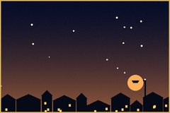
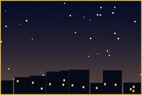
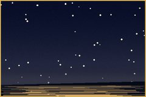
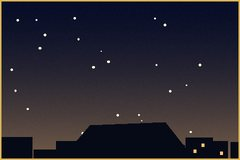
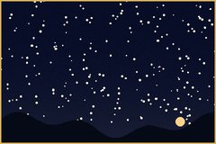
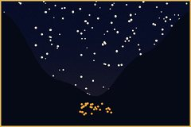
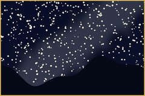

асман · the sky over Talas, 42.5° north · star names, plates, a planisphere
How dark is dark enough. Near Talas, in order of how far I have to go. The pictures are what a quarter of the sky looks like from each place on a moonless night, more or less; the stars out of five are mine.

Where I live. The city is all around, the street lamp in front of our gate is a sodium one from 1981, and in dry months the landfill smoke comes down the slope at night and turns the north sky orange-brown. I see about forty stars on a good night. Good for the Moon, the planets, the bright doubles and patience. Tal lives here.

The roof is locked; the fourth-floor balcony on the south side is not. On Tuesdays in term about six of us meet there: two telescopes, one thermos, Jupiter. The library is downstairs for when it clouds over (it has the 1978 atlas I copied the plates from).

Cold air sinks onto the river, so the seeing is steady and the Moon looks sharp. Mist after midnight in autumn. One night a year it is the worst place in Irad to look at stars: Yuhanna Tünü, 23 June, when the whole city brings its firewood here. Go anyway, but leave the telescope at home.

Not dark at all, but it is the highest point in the Old City and the horizon is low all round. Good for the young Moon and Cholpon in the west after sunset, with the Temir-Kapka gate under it. Old men on the bench there tell me the names of the stars wrong, confidently, and I listen.

The village of Cholpon's spring, where the Kyrgyz Range foothills meet the valley. North of the village the sky is properly dark; behind you, over the city, a dome of light from the whole valley, which is also interesting: you can watch how Talas grows every year. The last marshrutka back is early. Sleep in the car or make friends.

The gorge walls cut the sky down to a strip, which is beautiful and annoying. The antimony works at ~1,650 m glow all night, so stand above the spring at Maryam-Bulak with the works behind a ridge. Women come to the spring to pray for children; at night it is very quiet and you should be too. This is where I saw the comet in 2024.

The best sky near Talas. Past the gate, with the valley walls blocking the city, the Milky Way is a real road and you can see the Andromeda galaxy without trying. Ayyubov had his house-studio here, and the house-museum lady once let us set up in the yard; I like to think he looked up from the same spot. You need the rangers' permission to go further up the valley; ask at the gate and be polite.
places I have only heard about. far, and not all of them my roads.
Kenkol Pass. Drivers honk at the shrine on the pass. Above the shrine, I am told, the sky goes all the way down to the rocks. One day, with a guide and the right papers, and someone's uncle's Niva.
Kulan-Sor. A salt pan fourteen kilometres long, white like a felt by July. People say at night you can't tell where the salt ends and the Milky Way begins. It is the Eski El's salt and their country; I'd go only as a guest, if asked.
Aksay Plateau. High, flat, empty, thin air. The best seeing in Central Asia, probably, measured by nobody. My dream is one night there with Tal and nothing else.
Toktogul. The reservoir on a still night reflects the stars. A friend from TSU swears you can see Ürkör twice. I believe her.
Red torch, never white. Tell someone where you are going. Ask before you set up in anybody's field; in villages they will bring you tea and ask if you are looking for satellites or for God. Answer honestly: both. Take your rubbish down. The sky is the only thing in Irad that everyone shares exactly equally; leave it as you found it.